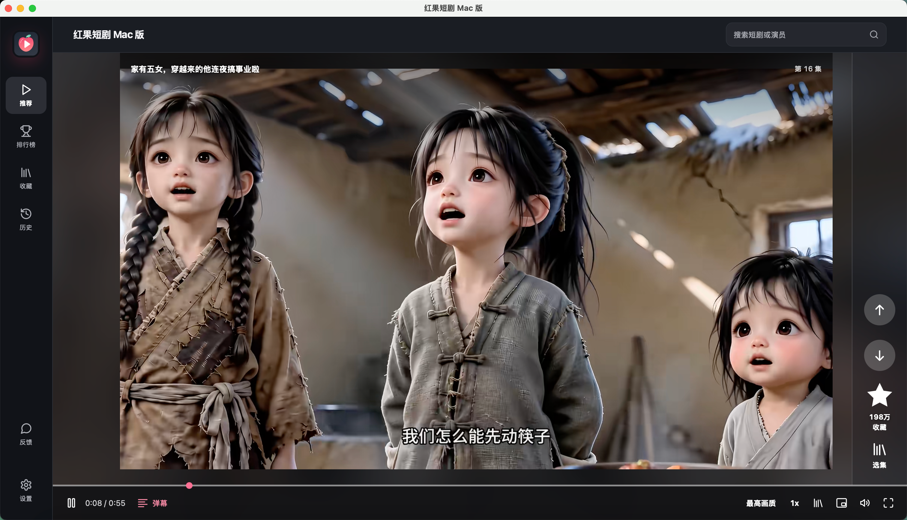
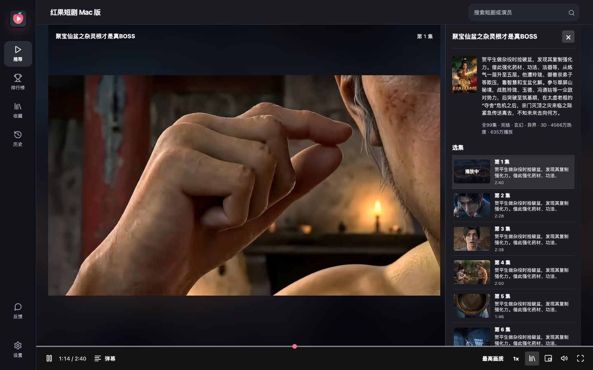
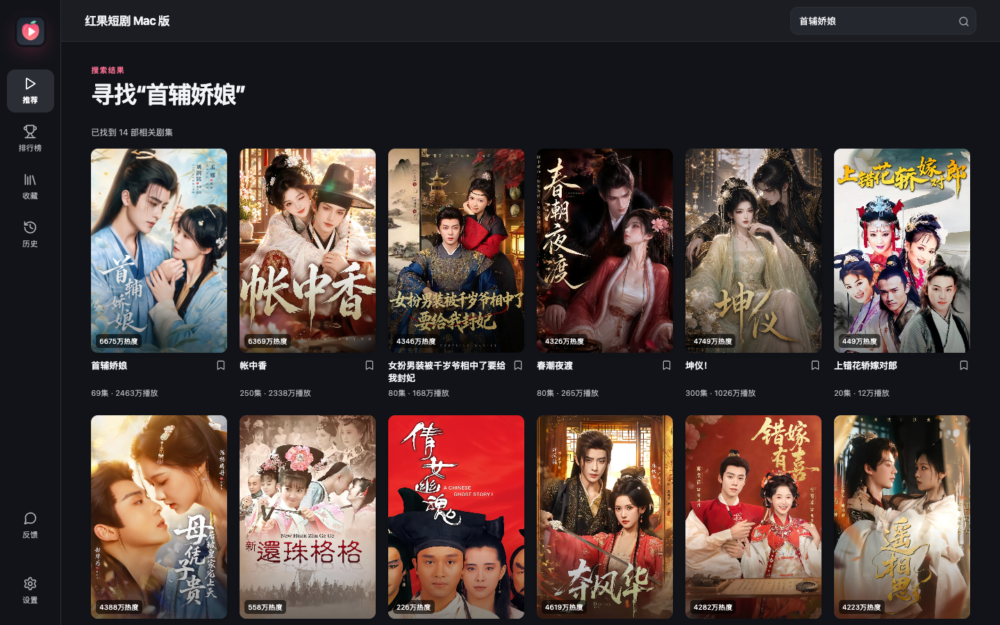

关联分季集中切换
识别同名剧集的不同季，详情和播放时都能直接选季。
发现 Python 缓存架构不符时，从已校验的离线组件重新配置。
离线虚拟环境创建失败时，尝试内置 Python 的标准库方案。
运行环境安装失败不再误显示为播放服务无法启动；详细原因保留在本机日志。
以下画面由当前版本连接本机内容服务时截取；封面和视频画面来自内容来源，具体内容会变化。

推荐流中切换剧目，同一部剧自然播完后接着播放下一集；常用播放控制留在底栏。

展开侧栏查看简介、分集和可识别的关联季；切集后继续在同一个播放器观看。

搜索剧名或演员，也可以从排行榜挑选；历史记录会保存本机观看位置。
识别同名剧集的不同季，详情和播放时都能直接选季。
向下切换推荐剧目，同一部剧播完后接着播放下一集。
最高画质、1080p、720p、540p、360p 可选，切换时保留播放进度。
缩到置顶小窗，边做其他事边看，需要时恢复大窗。
按剧名或演员搜索，也能从热播、推荐和新剧榜挑选。
收藏、历史、观看位置和偏好存在本机，重新打开接着看。
空格暂停，方向键切剧或快进退，长按右方向键临时加速。
播放时可开关按时间显示的弹幕。
支持跟随系统、浅色和深色外观，画质与倍速偏好也可保存。
往下刷时继续获取剧目；近期已展示的内容会尽量避开，也可从榜首重看。
连接中断可重试；当前画质不可用时尝试其他档位，切画质失败保留原播放。
默认提前准备下一集，减少切集等待；低配机器或流量敏感时可在设置中关闭。
针对部分不兼容的 HE-AACv2 音轨，仅转换音频，保留原视频编码。
应用内整理问题信息，可选择在 Gitee 或 GitHub 提交；发现新版本时提示前往发行页。
下载完整安装包后拖入“应用程序”。首次启动只在本机配置内置组件，无需再下载运行环境。
完整安装包内置 arm64 与 x86_64 运行组件；增加安装缓存修复和离线环境回退。物理 Intel 尚待实机验收。
下载 DMG 安装包 下载校验文件 查看版本说明 ↗ 安装包约 300 MiB · 首次安装无需下载组件 · M5/macOS 26 与物理 Intel 待实机验证旧版检查更新失败？可直接下载 DMG 覆盖安装；本机收藏、历史与观看位置会保留。
最低目标版本为 macOS 13；目前实测环境为 Apple Silicon / macOS 15.3.1。
点击页面上的“下载 Mac 版”，浏览器会直接下载 DMG 文件。
打开 DMG，将应用拖入“应用程序”文件夹。
本版尚未经过 Apple 公证。若系统仅提示无法验证开发者，可在“系统设置 → 隐私与安全性”中确认打开；若提示恶意软件或“将损坏你的电脑”，请停止安装并反馈。首次启动只配置内置组件；搜索和播放仍需联网。
这是非官方项目，与红果短剧官方无隶属关系。应用界面、Mac 外壳和安装流程独立实现；本版内置首次运行所需组件，客户端源码目前未公开。
版本验证范围、第三方组件与使用限制请查看项目文档和发行说明。收藏与观看记录保存在本机，不与手机账号同步。新版默认发送匿名启动、播放成功及预设失败类别统计，通过随机安装 ID 去重，服务端只保存散列值；不上传观看内容、错误详情或设备信息，可在设置中关闭。本机日志不会自动上传。本站使用 Cloudflare Web Analytics 统计页面访问。